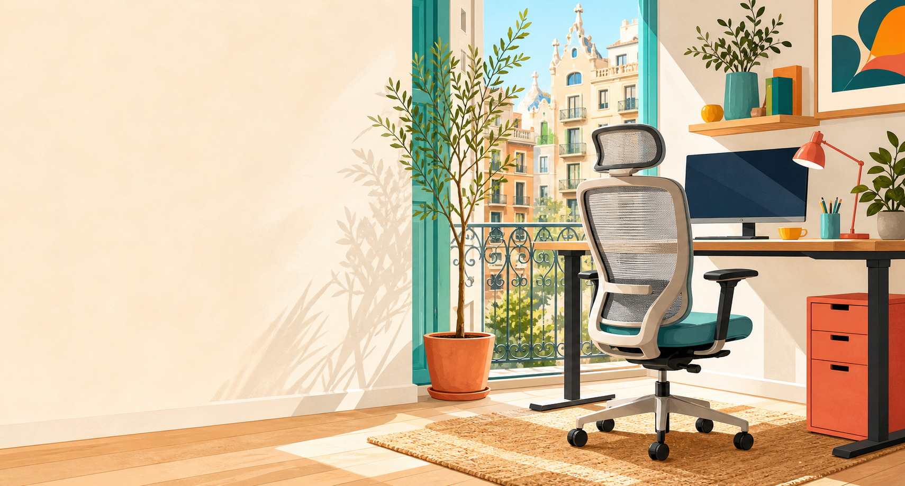

Low enough seat height
A chair scores highest when it starts near 40-43 cm or lower, making flat feet and parallel thighs more realistic without relying on a footrest.

Barcelona ergonomic chair report
A readable shortlist for petite fit, lower-back support, airflow, and value across Spain-accessible chair options.
Executive summary
For a woman who is 158 cm tall, has proportionally short legs, sometimes gets lower-back pain, and works at a computer, the most important chair variables are a low enough minimum seat height, a seat depth that can shorten to roughly the low-40 cm range or below, tunable lumbar support, and breathable materials.
The strongest overall fits in the report are Herman Miller Aeron Size A, Haworth Zody, Steelcase Series 1, and Herman Miller Sayl. ACTIU Stay stands out as the most strategically interesting Spain-made value option, while IKEA LÅNGFJÄLL is the best lower-cost pure-dimensions bargain.
Fit criteria
A chair scores highest when it starts near 40-43 cm or lower, making flat feet and parallel thighs more realistic without relying on a footrest.
The sweet spot is roughly 38-43 cm. A deep pan can block a shorter user from sitting fully back into the lumbar support.
Height-adjustable lumbar, pelvic support, or strong sacral support matters more when occasional lower-back pain is part of the brief.
Mesh, suspension backs, and airy structures earn extra credit for long desk sessions, especially compared with warm all-foam designs.
Research workflow
Ranked shortlist
Filter by buying posture or search by model, maker, or feature.
Seat-height visual
Minimum seat height is one of the quickest ways to eliminate chairs that may force dangling feet. The highlighted band marks the report's preferred low-start zone for this user.
Shorter bars that begin near the low 40s are easier to dial in. A very tall maximum is less important than a usable minimum for a 158 cm user.
Green band: preferred low-start zone around 40-43 cm.
Buying guidance
Choose Aeron Size A first and Zody second. Aeron has the clearest petite-size recommendation, while Zody has a very strong seat-depth and lumbar package.
Start with Steelcase Series 1. It keeps key ergonomic controls and a useful 40 cm functional seat-depth floor at a lower official shop price than many premium rivals.
Investigate ACTIU Stay first if budget matters. Its public technical-sheet numbers are unusually favorable for a shorter user at a much lower price floor.
Start with LÅNGFJÄLL. Move to JÄRVFJÄLLET only if mesh and a taller back matter more than petite fit.
Avoid buying without testing if minimum seat height is around 45 cm or higher and the seat depth cannot shorten to roughly 42-43 cm or less. Those two numbers are where "looks ergonomic" often stops matching "actually fits."
Limitations from the original report: real-time physical showroom stock in Barcelona was not verified; some product pages did not expose exact backrest heights; prices on Amazon.es and promotional IKEA pages can change quickly.